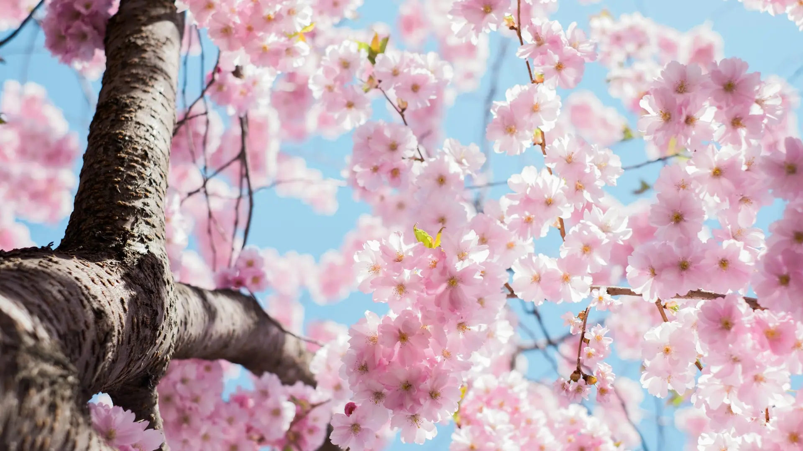
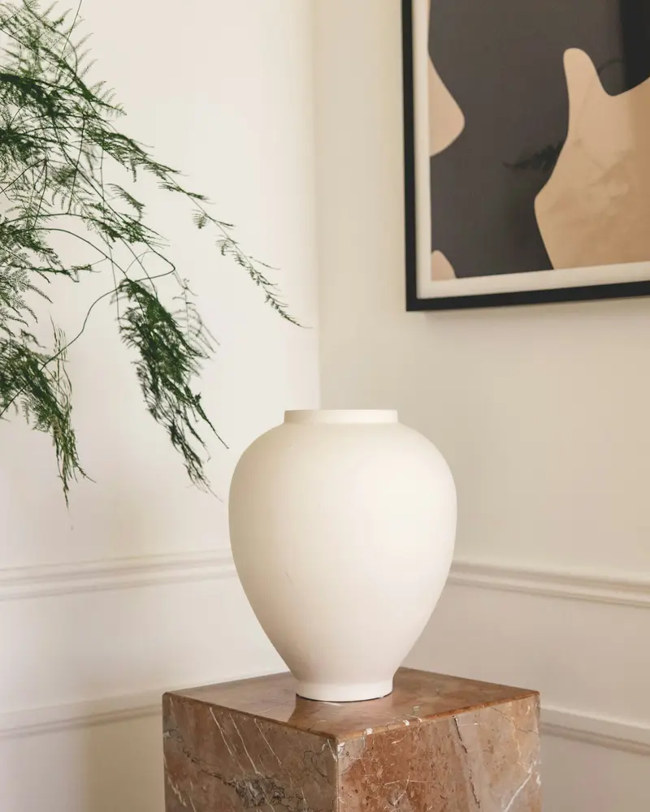

Цветочное ателье «Вереск»
Мы собираем букеты, в которых чувствуется рука флориста: свободные формы, живая фактура и честные цветы без лишней химии и пластика.

История
С маленькой мастерской — к ателье
«Вереск» начинался как мастерская одного флориста, которая собирала букеты для друзей и соседей. Постепенно сарафанное радио сделало своё дело: появились постоянные клиенты, свадьбы, корпоративные заказы.
Сегодня у нас своя студия, команда флористов и курьеров, но подход остался прежним: мы не продаём «букеты с конвейера» и всегда честно советуем, какие цветы выбрать.
Это демонстрационный бренд: история, команда и цифры на этой странице вымышлены.

Наши принципы
Только свежие цветы
Закупаем под заказы несколько раз в неделю. Никаких «остатков со склада».
Прозрачность
Присылаем фото каждого букета до отправки и везём только после вашего «да».
Внимание к деталям
Подписанная от руки открытка, лента в тон и инструкция по уходу — в каждом заказе.